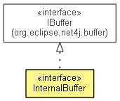

org.eclipse.spi.net4j
Interface InternalBuffer
- All Superinterfaces:
- IBuffer
- public interface InternalBuffer
- extends IBuffer

If the meaning of this type isn't clear, there really should be more of a description here...
- No Implement
- This interface is not intended to be implemented by clients.
| Methods inherited from interface org.eclipse.net4j.buffer.IBuffer |
clear, flip, formatContent, getBufferProvider, getByteBuffer, getCapacity, getChannelID, getErrorHandler, getState, isEOS, release, setEOS, setErrorHandler, startGetting, startPutting, write |
setBufferProvider
void setBufferProvider(IBufferProvider bufferProvider)
dispose
void dispose()
Copyright (c) 2011, 2012 Eike Stepper (Berlin, Germany) and others.